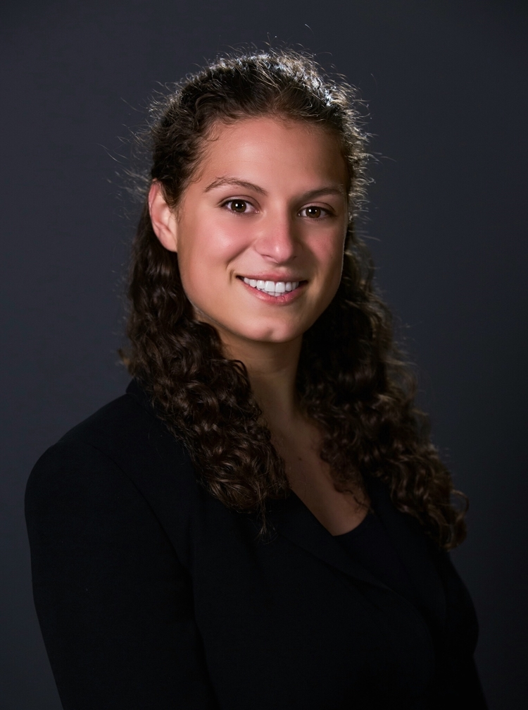

By building a market-based, transaction-oriented, and self-sustaining nonprofit we address the widespread societal issues that stem from hunger and malnutrition, driven by inadequate access to healthy food options. Boston Foods purchases high-quality meats and produce from Baldor Foods, bundling the groceries together in food boxes, and selling the boxes on a monthly basis at local delivery sites, Blackstone Community Center and Cambridge Community Center. Each box provides about two weeks worth of affordable and nutritious food at approximately $1.50 per meal. By contracting with Baldor Foods, we believe our product is attractive to all regardless of individual financial situations. Through Boston Foods, Bay Staters will be able to purchase supermarket-quality food at fast food prices.
Using a community-centered approach, we combine sustainable food and a sustainable model to give customers a reliable supplement to their weekly dietary needs. While the mission of Boston Foods is to fight hunger and malnutrition, there are no restrictions on who may purchase our food. This allows us to target the largest population, stimulate the greatest demand, and serve the most number of people. By offering a sustainable, nutritious, and consistent source of food we are, month by month, providing the foundation of a healthy lifestyle for hundreds of Bay Staters. The program works as follows:
Though we are a non-profit, we operate using the same business fundamentals as any for-profit firm. Efficiency, consistency, receptiveness, and value are the four pillars of our business and we are constantly improving our practices. Furthermore, Boston Foods is committed to quality. Every effort is made to procure the highest quality product while still maintaining affordability for our customers. Boston Foods operates strongly in a "farm to table" mindset. Fresh, locally sourced products are always purchased and our website provides customers with all possible information regarding their food such as origin farm and growing process. There are simply no hidden details. The Boston Foods model is, above all, about eliminating unnecessary costs and inefficiencies in order to provide a better product at a lower price to consumers here in Massachusetts.
Ever since Boston Foods was just an idea, the organization has benefitted immeasurably from the ideas, passion, dedication, and hard work of students and friends across the country. Boston Foods has drawn from the experiences of its sister organizations, Middlebury Foods and Deerfield Foods, and inspiration from Top Box Foods, a hunger-relief nonprofit operating in Chicago and New Orleans. Currently, the Boston Foods team is based out of Harvard University and Boston College.
Max Reik, Co-PresidentAs Co-President, Max Reik focuses on managing vendors and orders, as well as delivery day execution. He has experience working with community outreach programs and is currently a junior at Boston College pursuing a double major in Political Science and History. |
|
|  | Cara Kennedy Cuomo, Co-PresidentCara focuses on making Boston Foods the best that it can be. She works on growing Boston Foods as a social business while keeping a strong connection to our roots in community service. She has extensive experience working with nonprofits and is a current junior at Harvard College. |
Michael Gauch, Director of FinanceMichael Gauch serves as Director of Finance and focuses on managing financial statements and planning. He has experience working with startups and is currently a junior in the Boston College Carroll School of Management pursing a degree in finance and marketing. This past summer Michael attended the London School of Economics. |
|
Jake Levin, Chief Development OfficerJake focuses on community outreach in and around Boston and is the go-to person for establishing new delivery locations, as well as maintaining customer satisfaction. He has experience in policy work, marketing, and new media and is a current senior at Harvard College. |
Boston Foods would also like to extend a heartfelt thank you to the other students and friends who have contributed to this effort. A big thank you to Sarah Kennedy, Kevin Coakley, Tyler Moy, and Dave Matthews, for all your support.